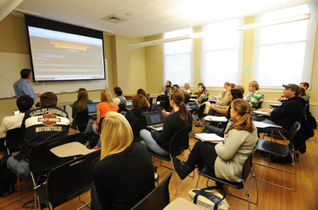

Functionalists view education as one of the more important social institutions in a society. They contend that education contributes two kinds of functions: manifest (or primary) functions, which are the intended and visible functions of education; and latent (or secondary) functions, which are the hidden and unintended functions.
MathML with ASCIIMath in it:
MathML with TeX in it:
MathML with Content Math inside it:

There are several major manifest functions associated with education. The first is socialization. Beginning in preschool and kindergarten, students are taught to practice various societal roles. The French sociologist Émile Durkheim (1858-1917), who established the academic discipline of sociology, characterized schools as "socialization agencies that teach children how to get along with others and prepare them for adult economic roles" (Durkheim 1898).
The National Center for Fair & Open Testing (FairTest) is committed to ending the bias and other flaws seen in standardized testing. Their mission is to ensure that students, teachers, and schools are evaluated fairly. You can learn more about their mission, as well as the latest in news on test bias and fairness, at their website: http://fairtest.org/
Manifest and Latent Functions of Education
|
Manifest Functions |
Latent Functions |
|
Socialization |
Courtship |
|
Transmission of culture |
Social Networks |